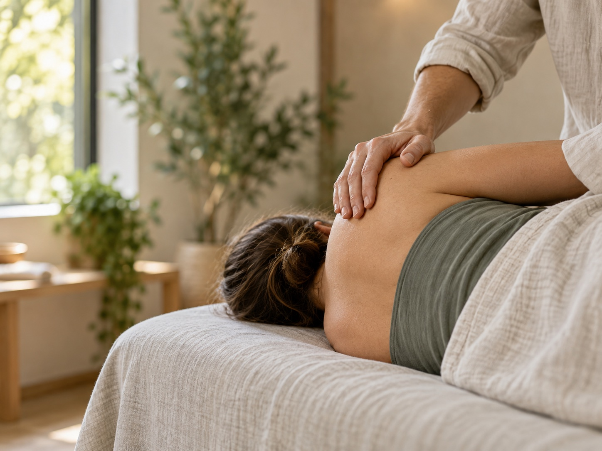

Naturheilkundliche Begleitung
Herzlich Willkommen
in meiner Praxis für
Naturheilkunde
In meiner Praxis setze ich auf bewährte naturheilkundliche Verfahren, moderne Erkenntnisse aus Medizin und Gesundheitswissenschaft sowie eine sorgfältige, individuelle Diagnostik. Dabei zählen für mich nicht allein die Symptome, sondern die Ursachen Ihrer Beschwerden.
Die Praxis
Meine Praxis
Gesundheit ist nicht nur die Abwesenheit von Krankheit, sondern als ein individuelles Gleichgewicht von Körper, Geist und Seele zu sehen. Mein Anspruch ist es, Sie auf Ihrem Weg zu mehr Wohlbefinden, Vitalität und Lebensqualität kompetent zu begleiten.
Bewusst verzichte ich auf homöopathische Verfahren sowie fernöstliche Heilmethoden. Stattdessen nutze ich Behandlungskonzepte, die auf nachvollziehbaren biologischen, physiologischen und naturheilkundlichen Grundlagen beruhen.
In vertrauensvoller Zusammenarbeit mit ausreichend Zeit für Ihre Anliegen und umfassender Beratung, entwickeln wir gemeinsam individuelle Wege, um Ihre Gesundheit nachhaltig zu stärken und Ihre Selbstheilungskräfte bestmöglich zu unterstützen.
Ich freue mich darauf, Sie in meiner Praxis begrüßen zu dürfen.
Behandlungsschwerpunkte
Naturheilkundliche Verfahren

Bewegung und Regulation
Funktionelle Orthonomie und Integration (FOI)
Die Funktionelle Orthonomie und Integration (FOI) betrachtet den menschlichen Körper als funktionelle Einheit. Nach dem FOI-Konzept können die Ursachen der Beschwerden häufig nicht nur dort liegen wo Schmerzen auftreten, sondern auch in anderen Bereichen des Bewegungsapparates.
Durch eine ausführliche Untersuchung werden Zusammenhänge zwischen Gelenken, Muskeln, Faszien und der Körperstatik analysiert.
Ziel der Behandlung ist es, Bewegungseinschränkungen und funktionelle Störungen aufzuspüren und durch gezielte manuelle Techniken zu harmonisieren. FOI fördert die natürliche Beweglichkeit des Körpers und bringt das Zusammenspiel der verschiedenen Strukturen wieder ins Gleichgewicht.
Dabei wird nicht nur die schmerzende Region behandelt, sondern der gesamte Bewegungsapparat berücksichtigt.
Anwendungsbereiche sind neben Nacken- und Rückenschmerzen auch Bewegungseinschränkungen und andere funktionelle Beschwerden des gesamten Bewegungsapparats.
Die Behandlung orientiert sich an Ihren individuellen Bedürfnissen und lässt sich wunderbar auch durch andere naturheilkundliche Maßnahmen ergänzen.
Neuraltherapie
Die Geschichte der Neuraltherapie
Die Neuraltherapie wurde in den 1920er Jahren von den Ärzten Ferdinand und Walter Huneke entwickelt. Sie ist ein naturheilkundliches Verfahren, bei dem durch gezielte Injektion eines Lokalanästhetikums gestörte Regelkreise im Körper beeinflusst und dadurch die natürlichen Selbstheilungskräfte aktiviert werden.
Grundlage der Neuraltherapie ist die Erkenntnis, dass unser Körper über das vegetative Nervensystem eng miteinander vernetzt ist. Narben, Entzündungen, Verletzungen oder andere Belastungen können diese Regulation stören und Beschwerden auch an anderer Stelle des Körpers auslösen oder unterhalten.
Ziel der Behandlung ist nicht allein die Behandlung einzelner Symptome, sondern dem Organismus einen Impuls zur Neuordnung und Selbstregulation zu geben.
Die Neuraltherapie wird häufig unterstützend eingesetzt bei:
- Rücken-, Nacken- und Gelenkbeschwerden
- Muskelverspannungen
- Kopfschmerzen und Migräne
- chronischen Schmerzsyndromen
- Beschwerden nach Verletzungen oder Operationen
- Narbenstörungen
- funktionellen Beschwerden des Bewegungsapparates
- wiederkehrenden Entzündungen
- vegetativen Beschwerden und Stressbelastungen
Individuelle Behandlung
Vor jeder Behandlung erfolgt eine ausführliche Anamnese und Untersuchung. Die Therapie wird individuell auf Ihre Beschwerden und Ihre persönliche Situation abgestimmt und häufig mit weiteren naturheilkundlichen Verfahren kombiniert.
Ernährung und Mikronährstoffe
Ernährungsmedizin
Gesundheit beginnt mit der richtigen Ernährung
Die Ernährungsmedizin beschäftigt sich mit dem Einfluss der Ernährung auf Gesundheit, Wohlbefinden und Leistungsfähigkeit.
Eine individuell angepasste Ernährung kann helfen, die eigene Gesundheit aktiv zu unterstützen, das Wohlbefinden zu steigern und neue Energie für den Alltag zu gewinnen.
Alter, Lebensstil, gesundheitliche Beschwerden, Unverträglichkeiten, Stress oder individuelle Stoffwechselbesonderheiten beeinflussen den persönlichen Nährstoffbedarf. Deshalb steht in meiner Praxis nicht eine allgemeine Diät im Mittelpunkt, sondern eine individuelle und alltagstaugliche Ernährungsberatung.
Individuelle Beratung statt kurzfristiger Diäten
Im Rahmen einer ausführlichen Anamnese werden Ihre Ernährungsgewohnheiten, Beschwerden und körperlichen Ziele betrachtet. Gemeinsam entwickeln wir ein auf Ihre Bedürfnisse abgestimmtes Ernährungskonzept, das sich dauerhaft in Ihren Alltag integrieren lässt.
Mögliche Anwendungsbereiche
- Verdauungsbeschwerden
- Nahrungsmittelunverträglichkeiten
- Gewichtsregulation
- Erschöpfung und Müdigkeit
- Stoffwechselstörungen
- Unterstützung des Immunsystems
- Prävention und Gesundheitsförderung
- Begleitung chronischer Beschwerden
Ganzheitlicher Ansatz
Ernährung bedeutet mehr als die Aufnahme von Kalorien. Sie beeinflusst zahlreiche Körperfunktionen und kann einen wichtigen Beitrag zu Gesundheit und Lebensqualität leisten. Die Ernährungsmedizin wird daher häufig mit weiteren naturheilkundlichen Verfahren kombiniert, um optimale Behandlungserfolge zu erreichen.
Orthomolekulare Medizin / Mikronährstofftherapie
Unterstützung der Gesundheit durch gezielte Nährstoffversorgung
Jeder Mensch hat aufgrund seiner individuellen Lebenssituation und Ernährungsgewohnheiten sowie körperlicher und seelischer Belastungen einen unterschiedlichen Bedarf an Mikronährstoffen.
Stress, chronische Erkrankungen, Medikamenteneinnahme, Chemotherapie oder einseitige Ernährung können dazu beitragen, dass der Organismus nicht optimal versorgt wird.
Die Orthomolekulare Medizin beschäftigt sich mit der bedarfsgerechten Versorgung des Körpers mit Vitaminen, Mineralstoffen, Spurenelementen, Aminosäuren und anderen Mikronährstoffen.
Das Ziel der Mikronährstofftherapie ist es, den Organismus optimal zu versorgen und damit die natürlichen Regulations- und Selbstheilungskräfte des Körpers zu unterstützen.
Individuelle Betrachtung statt Standardempfehlungen
Anhand einer ausführlichen Anamnese und Blutuntersuchungen können Hinweise auf einen erhöhten Bedarf oder eine unzureichende Versorgung mit bestimmten Nährstoffen erkannt werden.
Auf dieser Grundlage erarbeite ich mit Ihnen gemeinsam ein individuelles Konzept. Es umfasst eine gezielte Ernährungsberatung sowie eine auf den persönlichen Bedarf abgestimmte Mikronährstoffversorgung.
Mögliche Anwendungsbereiche der Orthomolekularen Medizin:
- Erschöpfungszustände und verminderte Leistungsfähigkeit
- erhöhte Stressbelastung
- Konzentrations- und Gedächtnisprobleme
- häufige Infekte
- Unterstützung des Immunsystems
- sportliche Belastung
- Stoffwechselstörungen
- chronische Beschwerden
- Unterstützung in den Wechseljahren
- gesundes Altern und Prävention
Infusionstherapie
Direkte Versorgung mit wertvollen Mikronährstoffen
Die Infusionstherapie ist ein bewährtes naturheilkundliches Verfahren, bei dem Vitamine, Mineralstoffe, Spurenelemente, Aminosäuren oder andere ausgewählte Substanzen direkt über die Vene verabreicht werden. Dadurch gelangen die Wirkstoffe unmittelbar in den Blutkreislauf und stehen dem Körper ohne Umwege zur Verfügung.
Mögliche Anwendungsbereiche
- Erschöpfung und Müdigkeit
- Stress und erhöhte Belastung
- Unterstützung des Immunsystems
- Regeneration nach Krankheit
- Konzentrations- und Leistungsabfall
- Begleitung in anspruchsvollen Lebensphasen
- Unterstützung bei erhöhtem Mikronährstoffbedarf
Individuelle Behandlung
Vor der Infusionstherapie erfolgt eine ausführliche Anamnese und Blutuntersuchung, um die Therapie individuell auf Ihre Bedürfnisse und Ihre gesundheitliche Situation abzustimmen.
Ganzheitlicher Ansatz
Die Infusionstherapie kann eine sinnvolle Ergänzung zu einer gesunden Lebensweise und weiteren naturheilkundlichen Behandlungen sein. Dabei wird der Körper gezielt unterstützt und natürliche Regulations- und Selbstheilungskräfte werden gefördert.
Pflanzenheilkunde
Aromatherapie
Die Kraft natürlicher Düfte für Körper und Seele
Die Aromatherapie ist ein traditionelles naturheilkundliches Verfahren. Dabei werden hochwertige ätherische Öle gezielt zur Förderung von Wohlbefinden und Gesundheit eingesetzt.
Die natürlichen Duftstoffe werden aus Blüten, Blättern, Früchten, Wurzeln oder Harzen gewonnen und können auf unterschiedlichen Arten angewendet werden.
Jedes ätherische Öl besitzt ein individuelles Wirkprofil. So wirken bestimmte Düfte beruhigend, entspannend, schmerzlindernd oder stimmungsaufhellend, während andere die Konzentration fördern oder das allgemeine Wohlbefinden unterstützen.
Mögliche Anwendungsbereiche
- Hauterkrankungen
- Wundheilungsförderung
- Schlafstörungen
- Unterstützung des Immunsystems
- Begleitung in belastenden Lebenssituationen
- Förderung von Entspannung und Wohlbefinden
- Muskel – und Gelenkschmerzen
- Linderung von Allergiesymptomen (Heuschnupfen)
- Unterstützung der Atemwege
- Erkältungskrankheiten
Die Aromatherapie wird häufig mit anderen Naturheilverfahren kombiniert, um die Behandlung ganzheitlich zu ergänzen.
Ätherische Öle können beispielsweise in Form von Einreibungen, Inhalationen, oraler Einnahme, Duftmischungen oder Bädern angewendet werden.
Nach einer ausführlichen Anamnese finde ich mit Ihnen gemeinsam das für Ihre Bedürfnisse passende Öl und Sie dürfen unter Anleitung Ihre ganz eigene Ölmischung selbst herstellen.
Gemmotherapie
Die Gemmotherapie ist ein naturheilkundliches Verfahren, das Pflanzenauszüge aus frischen Knospen und jungen Trieben nutzt.
Der belgische Arzt Dr. Pol Henry erkannte, dass im embryonalen Gewebe der Pflanzen alle genetischen Informationen vorhanden sind und es daher die höchste Potenz an Vitalität hat.
Gemmomazerate sind reich an Wachstumsfaktoren und Nukleinsäuren, die die Energie der künftigen Pflanzen enthalten und für den Menschen nutzbar machen.
Sie können in der Naturheilkunde eigenständig oder begleitend zu anderen Therapien eingesetzt werden, wirken regulierend, reinigend, ausleitend und aktivieren den Zellstoffechsel.
Mögliche Anwendungsgebiete sind unter anderem wiederkehrende Infekte, Erkältungen, Allergien, Hautprobleme, Schlafstörungen, Migräne, Erschöpfung.
Gut zu wissen
Häufige Fragen
Wie vereinbare ich einen Termin?
Schreiben Sie eine E-Mail oder rufen Sie an. In einem kurzen Vorgespräch klären wir, ob Ihr Anliegen zu meinem Angebot passt.
Was bringe ich zum ersten Termin mit?
Ihr ausgefüllter Anamnesebogen, vorhandene Arztbriefe, Laborbefunde, eine aktuelle Medikamentenliste und eine Liste Ihrer aktuell eingenommenen Nahrungsergänzungsmittel.
Ersetzt die Begleitung einen Arztbesuch?
Nein. Die Inhalte dieser Website und die angebotene Begleitung ersetzen keine ärztliche Diagnose oder Behandlung. Bei akuten Beschwerden wenden Sie sich bitte an eine ärztliche Praxis; in Notfällen an 112.
Werden die Kosten von der Krankenkasse übernommen?
Das hängt von Ihrem Tarif und Ihrer Versicherung ab. Bitte klären Sie eine mögliche Kostenübernahme direkt mit Ihrer Krankenkasse oder Versicherung.
Kontakt
Der nächste Schritt darf leicht sein.
Sie möchten herausfinden, ob die Praxis zu Ihrem Anliegen passt? Schreiben Sie gern oder rufen Sie an.
Bitte keine medizinischen Notfälle oder sensiblen Gesundheitsdaten per E-Mail. In einem Notfall wählen Sie 112.